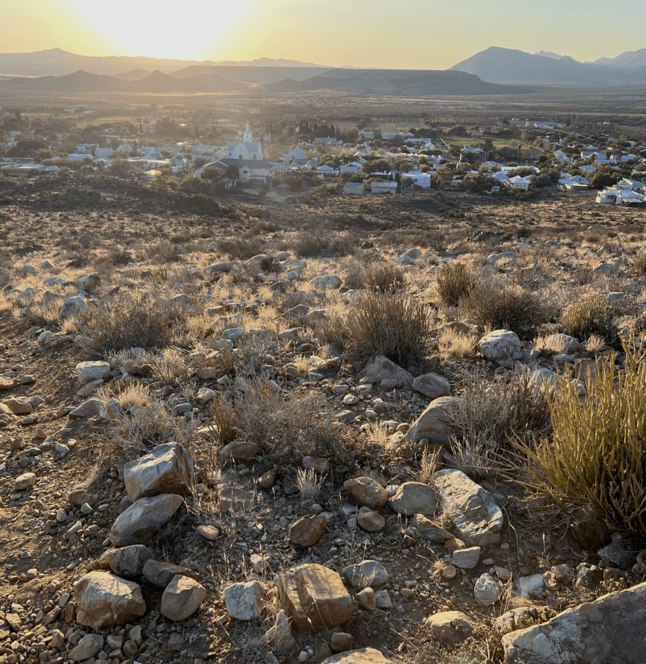

A scrub bush, a rolling bush, has painted this land,
softly veined with gray-olive tanned,
in shades of sand and rust-brown hue,
to the brilliant sky above the Swartberg's blue.
The people — they stayed as the passed here by,
to build white cottages beneath the summer sky,
and plant trees that sweet figs and pomegranates did bear,
with shade that entice to stay for as long as you care.
But when the swirling wind and dust turns day into dark,
underneath the sun’s unyielding arc,
their eyes wandered wild and wide,
pondering where they might have go and to hide.
Until not to soon, in the cool of evening air,
embraced and secured, in friendship to share,
the resolve strengthened and eyes turned bold,
as once more they chance, their blessing to behold;
And to hear how the scrub bush paints the land,
in twilight’s glow 'neath a milky-way's band -
for tomorrow, and tomorrow’s tomorrow,
whatever fate the future might bestow.